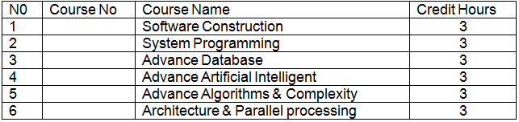

برنامج الماجستير في علوم الحاسوب
: رؤية البرنامج
تسعى لتحقيق التميز في البحث والتدريس وسائر التطبيقات التكنولوجيه ومواكبة التطور العلمي والتطبيقي في مجال علوم الحاسوب
رسالة البرنامج
تأهيل طلاب الدراسات العليا في المجال الأكاديمي والبحثي وذلك عن طريق تزويدهم ببيئة متميزة في التدريس والتعلم والبحث في الجوانب النظرية و التطبيقية.
: شروط القبول
.أن يكون حاصلاً على درجة البكالوريوس في مجال من مجالات الحاسوب وتكنولوجيا المعلومات أوفي تخصص مشابه وعلى أن يتم تحديد المواد الاستدراكية من مجلس القسم
اجتياز اختبار القبول بالمواد التي يحددها مجلس الكلية او المقابلة الشخصية ان وجدت.
أية شروط أخرىتقررها اللجان والمجالس المختصة.
متطلبات الحصول على درجة الماجيستير
أن ينهي الطالب بنجاح 27 ساعة معتمدة على الأقل من مقررات الماجستير في التخصص.
إتمام أطروحة الماجستير والدفاع عنها بنجاح.
نشرمالا يقل عن ورقة بحثية في مجلة معترفه كجزء من رسالة الطالب وفقا لرؤية القسم ومجلس الكلية تكون باسم الكلية.
: نظام الدراسة
يجب أن لا تقل نسبة حضور الطالب عن 75% من المحاضرات للمقرر الدراسي الواحد وإلا حرم من دخول إختبار المقرر
يتوجب علي الطالب الحصول على معدل تراكمي لايقلعن 75% لكي يتمكن من تسجيل الرسالة البحث
بالنسبة للطلاب الذين لم يوفقوا بالحصول على المعدل المحدد في الفقرة (ب) لا يحق لهم تسجيل الماجستير ويمكن ان يمنحوا شهادة دبلوم عالي
الخطه الدراسية للبرنامج:
سبعة وعشرون ساعة لعدد 9 مقررات دراسية، بواقع ثلاث ساعات لكل مقرر
تسع ساعات للرسالة (اطروحة) الماجستير
: وعلى ضوء ذلك فإن الخطة الدراسية تتضمن ما يلي
: المقرارت الاساسية

:مقرارت مساندة
:المقرارت الاختيارية

توزيع الخطة الدراسية للبرنامج
الدرجات العلمية التي تمنحها الكلية
درجة الماجستير في علوم الحاسوب بعد أن يجتاز الطالب 33 ساعة معتمدة (مقررات دراسية + رسالة بحثية)
درجة البكالوريوس علوم في الحاسوب وتكنولوجيا المعلومات بعد أن يجتاز الطالب 135 ساعة معتمدة + تدريب صيفي في التخصصات التالية
أ. علوم الحاسوب.
ب. تكنولوجيا المعلومات
ج. نظم المعلومات
درجة الدبلوم لمدة سنتين دراسيتين في تخصص نظم المعلومات بالشراكة مع مركز الحاسب الالي التابع لها بعد أن يجتاز الطالب على الأقل 66 ساعة معتمدة.
فرع اكاديمية سيسكو
• افتتح فرع لأكاديمية سيسكو بالكلية بالشراكة مع أكاديمية سيسكوالعالمية في العام 2014م بتمويل ذاتي من الكلية.
• تقدم الأكاديمية دورات في مجال الشبكات وتكنولوجيا المعلومات.
• تسعى الأكاديمية لتقديم دورات مجانية لطلاب قسم تكنولوجيا الشبكات وأمنية الحاسوب ودورات مخفضة لطلاب الكلية
مركز الحاسب الالي
أنشئ مركز الحاسب الآلي بقرار رئيس الجامعة في العام الجامعي 1997/ 1998م (مستقل ماليا وإداريا) ومن أهم مهامه الدفع بدور الجامعة كمؤسسة علمية خدمية رائدة تسهم في دعم الجهود الوطنية للتنمية والتطوير من خلال:
• تقديم البرامج والدورات التأهيلية المتخصصة في مجال الحاسوب.
• تقديم برنامج الدبلوم بعد الثانوية العامة في مجال الحاسوب وتكنولوجيا المعلومات (برنامج الدبلوم نظم المعلومات).